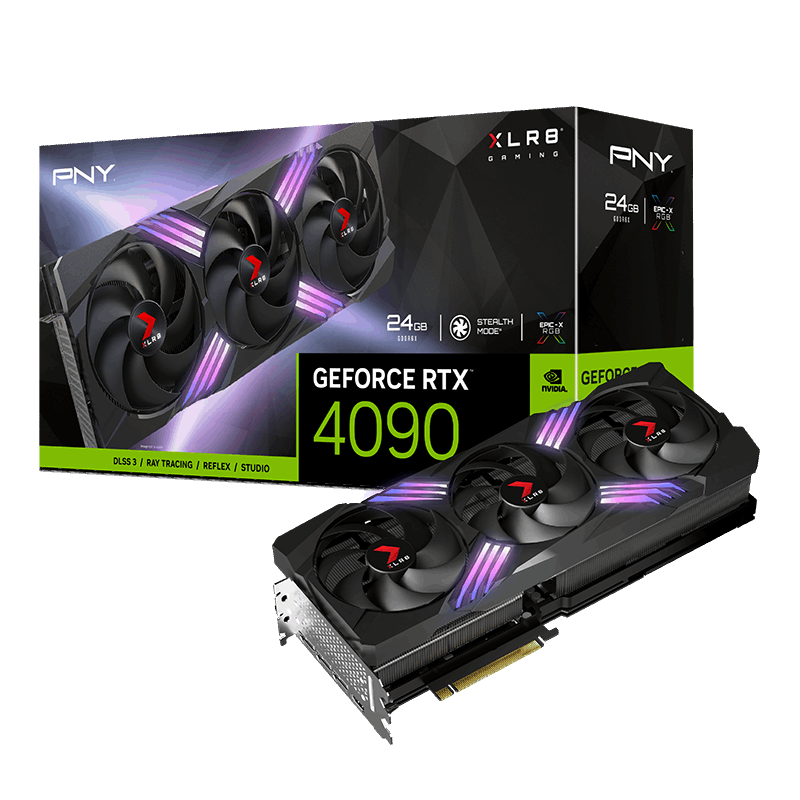

|
|
| FORM PEMBELIAN KOMPUTER DISINI!! |
NVIDIA GeForce RTX 4090
|
NVIDIA GeForce RTX 4090 adalah salah satu GPU paling kuat yang dirilis oleh NVIDIA, ditujukan untuk gaming tingkat tinggi dan aplikasi profesional seperti rendering 3D dan pembelajaran mesin. Ditenagai oleh arsitektur Ada Lovelace, GPU ini menawarkan performa luar biasa berkat 24GB VRAM GDDR6X, dan kemampuan ray tracing real-time yang sangat ditingkatkan. Dengan CUDA core yang sangat banyak dan kemampuan AI-enhanced, RTX 4090 mampu menjalankan game AAA di resolusi 4K dengan frame rate tinggi, memberikan pengalaman gaming yang sangat mulus dan visual yang sangat mendalam. Selain itu, RTX 4090 juga sangat populer di kalangan pembuat konten dan profesional kreatif yang membutuhkan kekuatan komputasi grafis untuk rendering video dan pembuatan animasi. Fitur DLSS (Deep Learning Super Sampling) dan ray tracing memungkinkan visual yang lebih realistis dalam game dan aplikasi desain grafis. Meskipun memiliki harga yang sangat tinggi, GPU ini dirancang untuk memenuhi kebutuhan pengguna yang mencari performa tanpa kompromi, terutama di bidang gaming dan pengolahan grafis intensif. |
 |